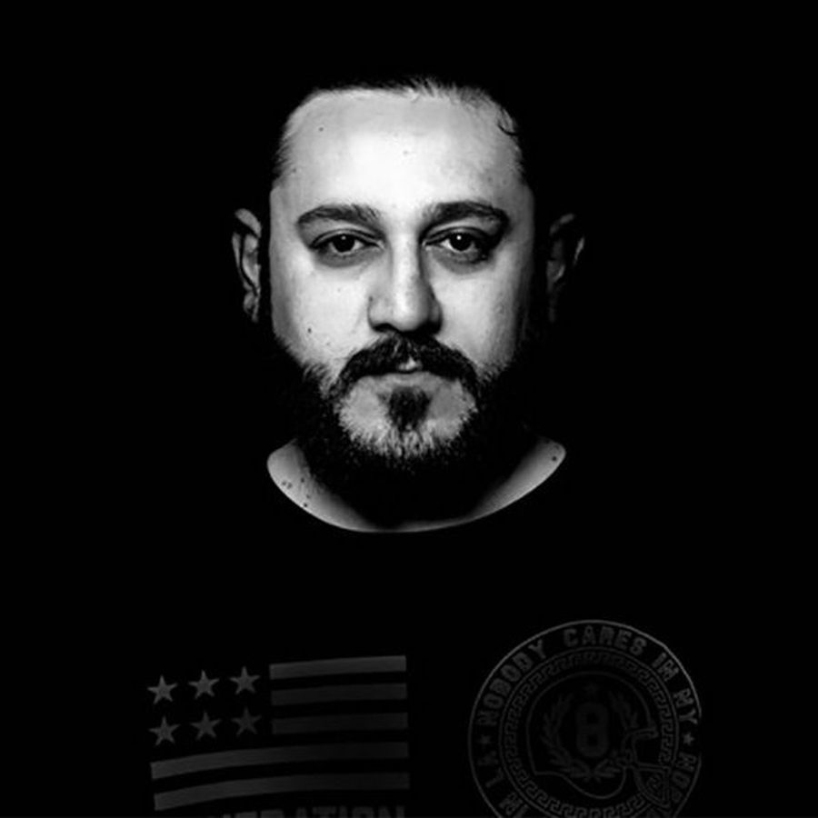

Omair Spreads the Ethereal Trance Truth on Laser-Kissed “Fake News”


The Las Vegas edition of EDC draws ever closer, as we’re only a few short weeks away. For trance lovers, the Dreamstate arena is the real appeal of the three-day bonanza. It’ll return this year via the quantumVALLEY stage, which will be found in a new open-air setup, with a lineup featuring veterans like PvD and Ferry Corsten alongside edgy newcomers like Grum and Andrew Bayer. Fitting into the latter category is Omair, the Dallas-born trance ascendant behind the OHM Music label. We’ve got his upcoming release—landing at the end of next week—as our Track of the Day.
It’s provocatively titled “Fake News,” but rather than taking the form of some kind of post-truth propaganda, it’s actually a classic slice of progressive trance euphoria. A driving energy backed by lush, ethereal vibes that Omair eventually channels into an explosive buildup, it’s preparation aplenty for your open-air quantumVALLEY experience.
Available May 11 via OHM Music.
Follow Omair on Facebook | Twitter | SoundCloud
Follow OHM Music on Facebook | Twitter | SoundCloud